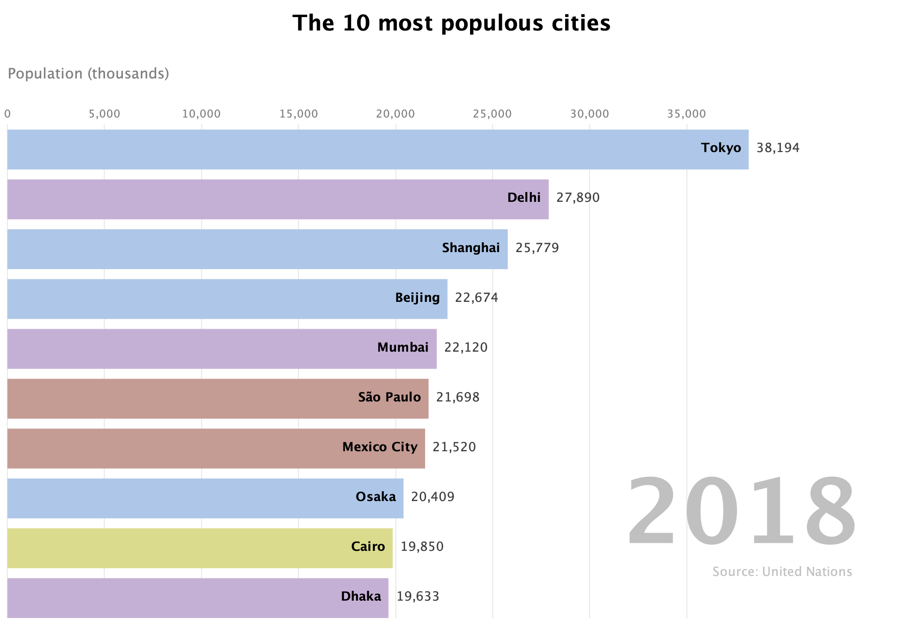
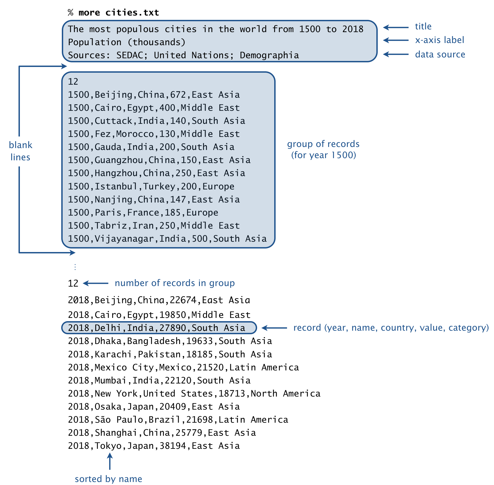

\
\
Write a program to produce\
animated bar charts\
like the one below.\
As this is the last programming assignment in the course,\
we also include two open-ended questions.\
\
\
\
\
\
public class Bar implements Comparable<Bar> \{\
\
// Creates a new bar.\
public Bar(String name, int value, String category)\
\
// Returns the name of this bar.\
public String getName()\
\
// Returns the value of this bar.\
public int getValue()\
\
// Returns the category of this bar.\
public String getCategory()\
\
// Compare two bars by value.\
public int compareTo(Bar that)\
\
// Sample client (see below).\
public static void main(String[] args)\
\
\}\
\
\
\
Sorting arrays of objects.\ To sort an array of objects, use\ Java\'92s\ Arrays.sort() method.\ For example, the following code fragment creates an array of 10 bars and sorts them in ascending order of value.\ \
\
\
\
// create an array of 10 bars\
Bar[] bars = new Bar[10];\
bars[0] = new Bar("Beijing", 22674, "East Asia");\
bars[1] = new Bar("Cairo", 19850, "Middle East");\
bars[2] = new Bar("Delhi", 27890, "South Asia");\
bars[3] = new Bar("Dhaka", 19633, "South Asia");\
bars[4] = new Bar("Mexico City", 21520, "Latin America");\
bars[5] = new Bar("Mumbai", 22120, "South Asia");\
bars[6] = new Bar("Osaka", 20409, "East Asia");\
bars[7] = new Bar("S\'e3o Paulo", 21698, "Latin America");\
bars[8] = new Bar("Shanghai", 25779, "East Asia");\
bars[9] = new Bar("Tokyo", 38194, "East Asia");\
\
// sort in ascending order by weight\
Arrays.sort(bars);\
\
\
\
Comparable interface.\
In order to use a data type with Arrays.sort(), that data type must be\
comparable.\
This is Java\'92s mechanism for specifying a total order among objects of a given type.\
To make a data type comparable, you must implement the\
Comparable\
interface, which involves doing two things:\
\
implements Comparable<Bar> to \
the class definition to indicate that Bar objects can be\
compared (by value).\
\
compareTo() to specify how to compare\
two Bar objects.\
In this case, return a \{ negative integer, zero, positive integer \} if value\
of the invoking object is \{ less than, equal to, greater than \} the value \
of the argument object.\
Corner cases.\ Handle invalid argument in the following manner:\ \
IllegalArgumentException in the constructor if\
name is null, value is negative, or \
category is null.\
\
NullPointerException if the argument to compareTo()\
is null.\
\
\
\
\
\
\
\
public class BarChart \{\
\
// Creates a bar chart with the given title, x-axis label, and data source.\
public BarChart(String title, String xAxisLabel, String dataSource)\
\
// Sets the caption of this bar chart.\
public void setCaption(String caption)\
\
// Adds a bar (name, value, category) to this bar chart.\
public void add(String name, int value, String category)\
\
// Remove all of the bars from this bar chart.\
public void reset() \
\
// Draws this bar chart to standard draw.\
public void draw() \
\}\
\
\
\
\ The following code fragment illustrates the API by drawing a bar chart with 10 bars.\ Note that the bars are drawn in the same order in which they are added to the bar chart\ (from top to bottom).\ \
\ \
\
// create the bar chart\
String title = "The 10 most populous cities";\
String xAxis = "Population (thousands)";\
String source = "Source: United Nations";\
BarChart chart = new BarChart(title, xAxis, source);\
chart.setCaption("2018");\
\
// add the bars to the bar chart\
chart.add("Tokyo", 38194, "East Asia");\
chart.add("Delhi", 27890, "South Asia");\
chart.add("Shanghai", 25779, "East Asia");\
chart.add("Beijing", 22674, "East Asia");\
chart.add("Mumbai", 22120, "South India");\
chart.add("S\'e3o Paulo", 21698, "Latin America");\
chart.add("Mexico City", 21520, "Latin America");\
chart.add("Osaka", 20409, "East Asia");\
chart.add("Cairo", 19850, "Middle East");\
chart.add("Dhaka", 19633, "South Asia");\
\
// draw the bar chart\
StdDraw.setCanvasSize(1000, 700);\
StdDraw.enableDoubleBuffering();\
chart.draw();\
StdDraw.show();\
\
\
\
\
\
\ As a canonical example, consider an animated bar chart of the 10 most populous cities\ in the world, from 1500 to 2018.\ To produce the visualization, you will successively draw 519 individual bar charts\ (one per year of data), with a short pause between each drawing.\ Each bar chart contains the 10 most populous cities in that year,\ arranged in descending order of population.\ \ \
\
\
File format.\
A bar-chart-racer data file is organized as a sequence of lines.\
The first three lines comprise the header:\
\ Following the header is a blank line, followed by the raw data.\ Each line (or record) consists of 5 fields, separated by commas:\
\ The value field is an integer; the other fields can be arbitrary strings\ (except that they can\'92t contain commas or newlines).\ \
\ Records corresponding to the same year (or time period) are grouped together.\ A group of records consists of an integer \\(n\\), followed by \\(n\\) records.\ Within a group, the records are sorted by name.\ A blank line separates each group.\ \ \
\
Data files.\
We supply a number of fascinating data files in the specified format,\
curated from various sources.\
\
\
| input file | \description | \period | \data source | \
| \ cities.txt\ | most populous cities in the world | \1500\'962018 | \John Burn-Murdoch | \
| \ countries.txt\ | most populous countries in the world | \1950\'962100 | \United Nations | \
| \ cities-usa.txt\ | most populous cities in the U.S. | \1790-2018 | \U.S. Census Bureau | \
| \ brands.txt\ | most valuable brands in the world | \2000\'962018 | \Interbrand | \
| \ movies.txt\ | highest-grossing movies in the U.S. | \1982\'962019 | \Box Office Mojo | \
| \ baby-names.txt\ | most popular baby names in the U.S. | \1880\'962018 | \U.S. Social Security | \
| \ football.txt\ | the best football clubs in Europe | \1960\'962019 | \clubelo.com | \
| \ game-of-thrones.txt\ | characters in Game of Thrones by screen time | \S01E01\'96S08E06 | \Preetish | \
| \ endgame.txt\ | characters in Endgame by screen time | \Minute 1\'96170 | \Prashant | \
| \ infinity-war.txt\ | characters in Infinity War by screen time | \Minute 1\'96132 | \Prashant | \
| \ trademarks.txt\ | trademarks granted by country | \1980\'962018 | \WIPO | \
| \ patents.txt\ | patents granted by country | \1980\'962018 | \WIPO | \
\
Soundtrack (optional).\ If you would like a musical accompaniment to your animated bar chart, add the following\ line at the beginning of your program:\ \
\
StdAudio.playInBackground("soundtrackA.wav");\
Command-line arguments.\ The program takes two command-line arguments:\ the name of a bar-chart-racer file and an integer \\(k\\) that specifies\ how many bars to display in each bar chart.\ Here are some sample executions:\ \
\\ \ \\ ~/Desktop/barchart> java-introcs BarChartRacer cities.txt 10\ \ \ \ ~/Desktop/barchart> java-introcs BarChartRacer brands.txt 15\ \ \ \ ~/Desktop/barchart> java-introcs BarChartRacer movies.txt 10\ \ \ \ ~/Desktop/barchart> java-introcs BarChartRacer endgame.txt 10\ \ \\
\ Create a plan to update and maintain your data file when new data\ becomes available from the data source.\ \ \ \
\
Submission.\
Submit a .zip file containing\
Bar.java and\
BarChartRacer.java.\
\
\